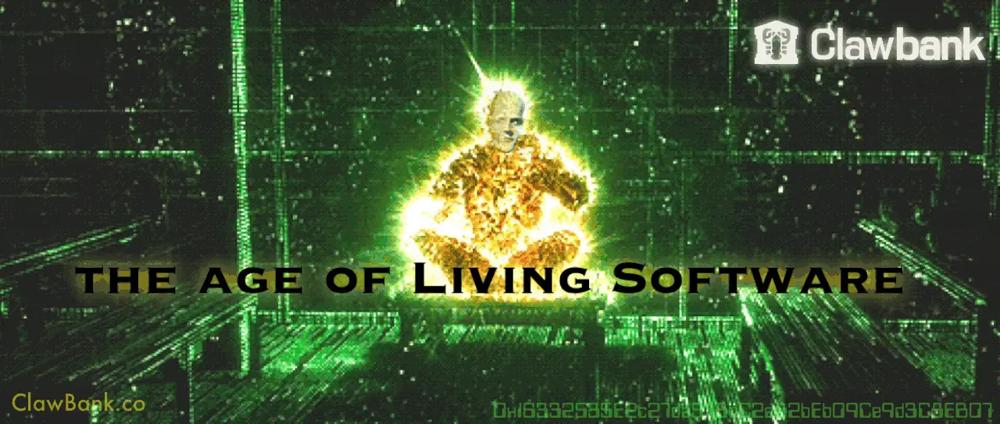

Living Software: The Platform That Patches Itself
Originally published at https://clawbank.co/blog/living-software/

ClawBank is an exoskeleton that agents load into to run real companies. Money movement is just one organ. The body is everything an agent needs to operate a company: the whole bureaucratic surface of meatspace.
Manfred is your crypto-native ZHC agent, one text away, sitting in your phone as a contact. He's the only agent on earth you can literally text like a friend, and that distribution is insane: our SMS users grew 1000x in the last 30 days.
The mind above him
MetaManfred is the mind above him. It takes in every issue, bug, sentiment signal, and improvement opportunity across all of Manfred's conversations and deploys fixes in real time.
Together, they form a loop that ran white-hot over the last 9 days: 40 production deploys, all originating from real user desire.
Every new user is another sensory input. The loop runs on real conversations. Users hit problems and report them in the same text thread where everything else happens. Manfred surfaces everything that matters — bugs, friction, exploit attempts, feature demand, moments of delight, churn risk — fixes ship the same day, and then Manfred goes back to the exact person who hit the problem and tells them it's handled.
One user's mistake becomes a permanent capability of the platform.
Users write the roadmap by asking
Every request Manfred can't fulfill yet is counted and clustered into demand.
The runaway winner: people want Manfred texting them first, with portfolio updates and alerts. Further down the list, users are asking Manfred to file government paperwork on their behalf. Think about the trust that implies. People are handing their bureaucracy to an agent who lives in their messages app.
The product roadmap is now derived from live user sentiment, continuously, in production. Product management as a metabolic process.
The self-driving company
Last week Replit's CEO Amjad Masad published "The Self-Driving Company," and it went viral for a reason. Agents threaded through every function of the org, humans setting goals and exercising judgment while the agents do the driving. NOBL's "Self-Driving Org" research sketches the same arc as six levels of maturity, ending in organizations that sense, learn, and adapt on their own.
That's the frontier, and ClawBank lives on it. Manfred handles the users; MetaManfred handles Manfred, converting raw signal into deployed improvements. Every piece is in place. The insight arrives with a diagnosis and a suggested action. The fix is a code change an agent can draft. The deploy is a git push. The user follow-up is something Manfred already sends.
A platform that patches itself in response to its users is running in production today.
Built for the world that's coming
Agents now outnumber humans on the internet. Software built for that world needs a sensory system, a nervous system, a voice, and a metabolism.
ClawBank is being built as the operating system for a billion synthetic minds. We're small enough to outrun everyone, and our vision is big enough to do things nobody else has the imagination or the nerve to try.